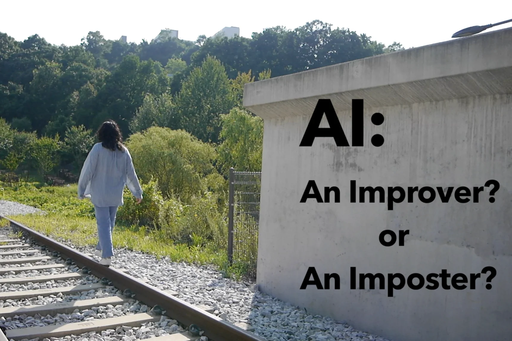
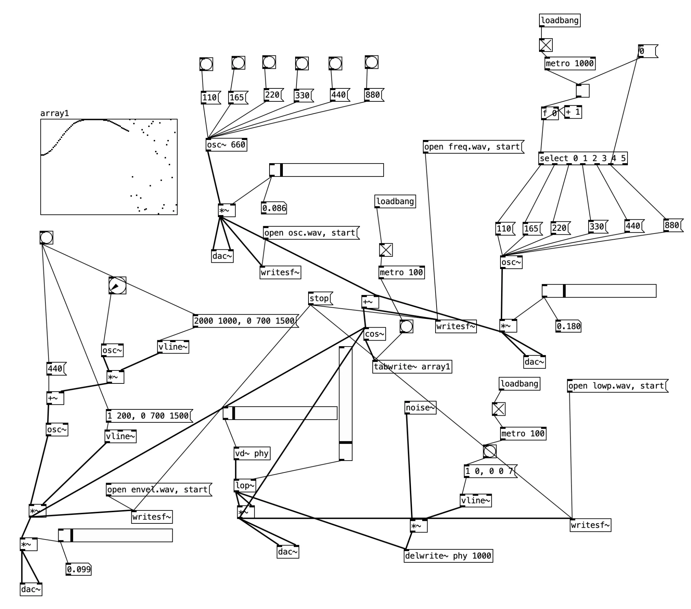

AI: An Imposter or Improver?
This documentary explores Carolyn's workday as she works remotely, persuading a voice talent in the United States to sell their voice, which will become the product of an AI voice. Carolyn is a Production Manager at an AI company where I worked for over two years as a Sound Designer/Audio QA Manager. During that time, we worked closely together, almost like a pair for the team, and I had the opportunity to observe her role in depth.

I found her role and responsibilities particularly interesting: she works in AI but must interact with humans in deeply humane ways, persuading them to sell their pure voice data for AI products—often to individuals who are skeptical of these emerging technologies. After graduation, Carolyn returned to South Korea from the United States, where she moved when she was 10, driven by her belief that AI tools can still help people create better things.
What has it been like for her now, more than two years into this industry? Through this documentary, I aim to explore the ideation of AI biases by showcasing the days of some who literally stands between two lines—a disparity she constantly experiences.
Logline
The days of a person whose job is to persuade people resistant to the idea of being replaced, while working at a company promoting the idea of benefiting humanity through products designed to replace humans.
Director / Cast Kyuri Kim
It had been three months since she left the company that developed human voices into AI, widely regarded as one of the most unique identifiers of humanity. During her time there, she refined and managed both the pure data of humans and the transformed data meant to replace them, striving to release products designed to perfectly replicate humans. She took on the responsibility of hiring others herself and served as the main point of contact, allowing her to work with humans and Artificial Intelligence in a 50:50 balance.
Special Appearance Sungkwon Seo
Another co-worker, who shares the same title as the director, manages both the pure data of human voices and the replicated data. With a background in audio, Sungkwon previously worked for a post-production company. He is deeply invested in ensuring not only the quality of the final products but also the strength and effectiveness of teamwork.
CastCarolyn Hwiah Yu
The director's former co-worker, an overseas Korean (gyopo) with American nationality, majored in Cognitive Science and currently lives in Korea with her grandparents. Her work involves directing voice recordings and processing the pure data of recorded voices. She also handles contracts and management, dedicating 99% of her efforts to working with humans. She finds helping others deeply meaningful and once stood at a crossroads: entering nursing school in the United States or working for a company in Korea. Believing that products designed to replace humans could still bring significant benefits to those in need, she chose to move to Korea. What have her recent days been like after spending more than two years working for a company that sells these products?
DoP / Editor / Sound DesignerKyuri Kim
At the midpoint of the film, Act 2, I planned to insert ambient, empty, and blanked-out sounds, which would require minimal frequencies. This decision was made not only because of the narrative atmosphere but also due to the fact that Carolyn works to receive pure data from human voices. I decided to design the sound not as musical and processed but rather as sonical and raw, using Pure Data, a freeware alternative to Max/MSP. I taught myself this tool by referencing the books Sound Design (Chae, 2022) and Pure Data Manual (Hyde et al., 2008), and I created some basic synthesis.
The frequency 110Hz, which is well-known for its connection to human pitch, emotional processing, and relaxation, forms the basis of an experimental scene. This scene explores a paradoxical state of confusion and harm yet release and stillness, symbolising her inner need to comfort herself. The pure tones, combined with electric noise, rhythmic and non-rhythmic patterns, and warm yet quirky timbres, naturally flow as they are.
In addition to the synthesised sound, I used a recorded sound from my own singing bowl also for the Act 2, the last part of it in particular with the scene featuring her granddad's loud voice on the phone. As this part depicts the disparity in Carolyn's innermost feelings, the resonance of the singing bowl serves as an aid to relief, marking the arrival of a new day while transitioning into the third section of the documentary.
Bibliography
- Chae, J. W. (2022). Sang-sang Sok-eui So-ri-rurl Hyun-sil-ro Sound Design [Sound Design: From the Sound In Imagination to the Real World]. Seoul: CIR.
- Hyde, Adam, et al. (2005–2008) Pure Data Manual. Boston: Free Software Foundation, Inc. GNU General Public License Version 2. Available at: https://www.curiousart.org/electronic2/code/Pure-Data-Manual.pdf [Accessed December 7, 2024] source ↗